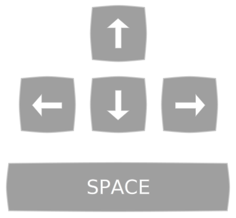
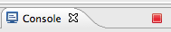
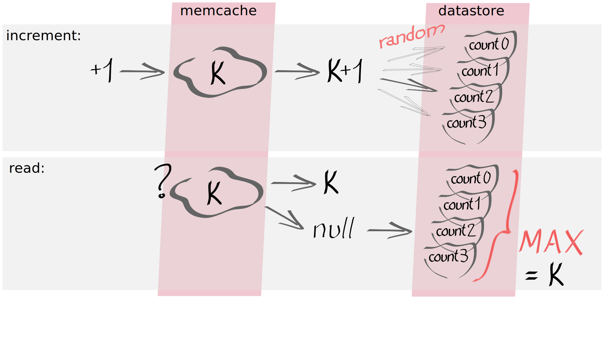
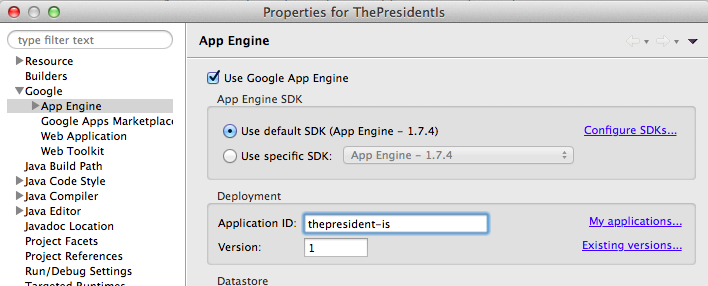

précédentsuivant
action
action = voir au dos
(explications complémentaires, solutions, ...)
action
action = voir au dos
(explications complémentaires, solutions, ...)
use index.html?lang=en#1 to read this in English
use index.html?lang=en#1 to read this in English
Martin Görner, Didier Girard, Patrice de Saint Stéban, Alexis Moussine-Pouchkine
Pour ceci vous disposez d'une plateforme, Google AppEngine et d'experts pour vous guider.
Le défi est à relever en 3 heures seulement.
Prêt à relever le défi ?
Vous venez de gagner un contrat. Il s'agit de développer le site web qui va annoncer au soir du 6 mai 2012 le nouveau président de la République Française.
Le site devra pouvoir accueillir un traffic potentiel maximum de 50 millions d'utilisateurs le 6 mai. Ce jour là, un pic à 2 millions d'utilisateurs simultanés est attendu a 20h. Ensuite, le 7 mai 1 million d'utilisateurs viendront et les jours suivants quelques milliers d'utilisateurs au grand maximum. Le site devra proposer des fonctions de type social : vote de satisfaction, commentaires, publications d'images, ...
Il ne doit pas faire défaut, il n'est pas
concevable qu'il tombe a l'heure H.

Si tout s'est bien déroulé, vous devriez avoir une icône "g" comme "Google" dans Eclipse.
Java 7 est en mode "preview" depuis la version 1.7.3 (October 2012)
Ce lab a été testé avec la version 3.x d'Objectify. La nouvelle version 4.x est incompatible mais disponible dans Maven Central.
Il n'y a pas de code de départ pour ce lab, nous partons d'une feuille blanche!
Google Plugin for Eclipse Google App Engine Java SDKhttp://dl.google.com/eclipse/plugin/4.2En utilisant l'assistant pour créer la servlet, le fichier standard web.xml est mis à jour pour effectuer le mapping de celle-ci.
Le fichier appengine-web.xml contient des valeurs par défaut et sera utilisé plus tard pour spécifier l'id et la version de l'application et d'autres paramètres optionels propres à AppEngine.
"port occupied", utiliser le bouton rouge "Terminate" dans le haut de la fenêtre "Console" (Window > Show View > Console).


(Dans le futur, pour écrire du code propre, préférez GWT.)
fichier: war/comments.jsp
<! DOCTYPE html> <%@ page contentType="text/html;charset=UTF-8" language="java" %> <html> <head><title>Le président est...</title></head> <body> <H1>Le président est ...</H1> <img src="hollande.png"> <p><%=request.getProtocol() %></p> </body> </html>
Cette JSP est accessible sur http://localhost:8888/comment.jsp
et peut-être configurée comme page par défaut dans war/WEB-INF/web.xml
Vous trouverez les photos des candidats derrière la première diapositive.
Le président est...
HTTP/1.1
On n'a pas encore le nom de l'élu alors faute de mieux on affiche le protocole en utilisant:
request.getProtocol()
fichier: war/comments.jsp
<! DOCTYPE html>
<%@ page contentType="text/html;charset=UTF-8" language="java" %>
<html>
<body>
<H1>Le président est...</H1>
<img src="sarkozy.png" />
<%
String comment = request.getParameter("user-comment");
if (comment != null)
comment = comment.replace("&", "&").replace("<", "<").replace(">", ">");
%>
<p>You: <%= comment %></p>
<form action="" method="post">
<textarea name="user-comment" ></textarea><br/>
<input type="submit" value="OK" />
</form>
</body>
</html>
ATTENTION aux vulnérabilités XSS! Ne jamais insérer dans une page du texte en provenance d'un utilisateur sans escaping.
Le président est...
Il vous faut une zone de saisie:
<form action="" method="post"> <textarea name="user-comment" /> <input type="submit" value="OK" /> </form>
Et la fonction qui donne la valeur d'un paramètre de requête:
request.getParameter("user-comment")
fichier: war/comments.jsp
<! DOCTYPE html> <%@ page contentType="text/html;charset=UTF-8" language="java" %> <%@ page import="com.google.appengine.api.users.*" %> <html><body> <H1>Le président est...</H1> <img src="hollande.png" /> <% UserService userService = UserServiceFactory.getUserService(); User user = userService.getCurrentUser(); if (user == null) {%> <p>Bonjour, <a href="<%= userService.createLoginURL(request.getRequestURI()) %>"> identifiez-vous</a> pour pouvoir commenter l'élection.</p> <%} else { String comment = request.getParameter("user-comment"); if (comment != null) comment = comment.replace("&", "&").replace("<", "<").replace(">", ">"); %> <p><b><%=user.getNickname()%>:</b> <%=comment%></p> <form action="" method="post"> <textarea name="user-comment"></textarea><br/> <input type="submit" value="OK" /> </form> <!-- lien de déconnexion --> <a href="<%= userService.createLogoutURL(request.getRequestURI()) %>">déconnexion</a> <% } %> </body></html>
Le président est...
Utiliser le UserService d'App Engine:
UserService userService = UserServiceFactory.getUserService(); User user = userService.getCurrentUser(); String n = user.getNickname(); String e = user.getEmail();
Il vous fournit aussi les URLs de connexion et déconnexion:
userService.createLoginURL("myTargetURL")
userService.createLogoutURL("myTargetURL");
Organisation des données: penser "XML" plutôt que tables.
Requêtes indexées uniquement.
Cohérence à terme des lectures et écritures.
Entity = kind +
(multivalued) properties + id
fichier: src/com/moi/lepresident/StoredComments.java
package com.moi.lepresident;
import java.util.*;
import com.google.appengine.api.datastore.*;
import com.google.appengine.api.datastore.Entity;
public class StoredComments {
static public void store(String text, String user) {
Entity commentEntity = new Entity("Comment");
commentEntity.setProperty("user", user);
commentEntity.setProperty("date", new Date());
commentEntity.setProperty("text", text);
DatastoreService datastore = DatastoreServiceFactory.getDatastoreService();
datastore.put(commentEntity);
}
static public List<Entity> retrieveAll() {
DatastoreService datastore = DatastoreServiceFactory.getDatastoreService();
Query q = new Query("Comment");
q.addSort("date", Query.SortDirection.DESCENDING);
return datastore.prepare(q).asList(FetchOptions.Builder.withLimit(100));
}
}
Utilisation:
StoredComments.store("Hello", "Nicolas"); // store
List<Entity> comments = StoredComments.retrieveAll(); // retrieve
for (Entity comment: comments) { ... comment.getProperty("text") ... }
Le président est...
Accès bas niveau au Datastore:
DatastoreService datastore = DatastoreServiceFactory.getDatastoreService();
Écriture:
Entity commentEntity = new Entity("Comment");
commentEntity.setProperty("date", new Date());
commentEntity.setProperty("text", text);
datastore.put(commentEntity);
Lecture: 100 résultats triés par date
Query q = new Query("Comment");
q.addSort("date", Query.SortDirection.DESCENDING);
List<Entity> results =
datastore.prepare(q)
.asList(FetchOptions.Builder.withLimit(100));
fichier: src/com/moi/lepresident/ObjectifyDAO.java
package com.moi.lepresident;
import com.googlecode.objectify.ObjectifyService; import com.googlecode.objectify.util.DAOBase;
public class ObjectifyDAO extends DAOBase
{ static { ObjectifyService.register(Comment.class); } }
fichier: src/com/moi/lepresident/Comment.java
package com.moi.lepresident;
import java.util.*; import javax.persistence.Id;
public class Comment {
@Id Long id; Date date; public String user, text;
public Comment() {}
public Comment(String text, String user) {
this.user = user; this.text = text; this.date = new Date();
}
public static void store(String text, String user) {
ObjectifyDAO dao = new ObjectifyDAO();
dao.ofy().put(new Comment(text, user));
}
public static List<Comment> retrieveAll() {
ObjectifyDAO dao = new ObjectifyDAO();
return dao.ofy().query(Comment.class).order("-date").limit(100).list();
}
}
public class Comment
{
@Id Long id;
Date date;
String user;
String text;
public Comment() {}
...
}
L'écriture en base auto-génère l'id si il est de type Long.
*: Plain Old Java Object
Enregistrement des classes et Data Access Object:
public class ObjectifyDAO extends DAOBase
{
static { ObjectifyService.register(Comment.class); }
}
// puis utiliser:
ObjectifyDAO dao = new ObjectifyDAO();
Écriture:
dao.ofy().put(new Comment(text, user));
Lecture: 100 résultats triés par date
List<Comment> query = dao.ofy().query(Comment.class)
.order("-date").limit(100).list();
for (Comment c: query) { ... }
fichier: src/com/moi/lepresident/Comment.java
La classe Comment doit devenir sérialisable:
public class Comment implements Serializable
On crée une nouvelle méthode pour la lecture des commentaires (avec cache):
public static List<Comment> retrieveAllCached() {
MemcacheService cache = MemcacheServiceFactory.getMemcacheService();
List<Comment> comments = (List<Comment>)cache.get("100Comments");
if (comments == null) {
comments = retrieveAll(); // read from Datastore
if (comments != null)
cache.put("100Comments", comments); // store in Memcache
}
return comments;
}
Enfin, on invalide le cache à chaque nouveau commentaire:
public static void store(String text, String user) {
ObjectifyDAO dao = new ObjectifyDAO();
dao.ofy().put(new Comment(text, user));
MemcacheServiceFactory.getMemcacheService().delete("100Comments"); // flush cache
}
L'interface:
MemcacheService cache =
MemcacheServiceFactory
.getMemcacheService();
cache.put("myKey", Object);
cache.get("myKey");
cache.delete("myKey");
Memcache s'assure que toutes vos instances voient la même valeur.
"Writes to memcache never touch the disk and are approximately 10 times faster in comparison to writes to the datastore"
Il suffit de garder le résultat de la dernière requête en Memcache (sérialisée) tant qu'un nouveau commentaire n'a pas été écrit.
La servlet: elle écrit le nom du président élu dans le datastore
fichier src/com/moi/lepresident/CronServlet.java
public class CronServlet extends HttpServlet{
@Override
protected void doGet(HttpServletRequest req, HttpServletResponse resp) throws IOException {
Entity Elected = new Entity("Elected");
Elected.setProperty("name", "François Hollande"); //ou un autre!
DatastoreServiceFactory.getDatastoreService().put(Elected);
}
}
Son mapping dans WEB-INF/web.xml, avec restriction d'accès:
<servlet> <servlet-name>CronServlet</servlet-name> <servlet-class>com.moi.lepresident.CronServlet</servlet-class> </servlet> <servlet-mapping> <servlet-name>CronServlet</servlet-name> <url-pattern>/cronAllowPresidentDisplay</url-pattern> </servlet-mapping> <security-constraint> <web-resource-collection> <url-pattern>/cron*</url-pattern> </web-resource-collection> <auth-constraint> <role-name>admin</role-name> </auth-constraint> </security-constraint>
Affichage conditionnel (fichier war/comments.jsp):
Entity e = DatastoreServiceFactory.getDatastoreService().prepare(new Query("Elected")).asSingleEntity();
if (e == null) /*message d'attente*/ else /*affichage de*/ e.getProperty("name");
(Pour afficher également la photo du président, récupérez les images au dos da la première slide.)
Le président est...
Les Cron invoquent des servlets dont l'URL est définie dans web.xml
Périodicité à configurer dans WEB-INF/cron.xml (syntaxe):
<?xml version="1.0" ?>
<cronentries>
<cron>
<url>/cronAllowPresidentDisplay</url>
<schedule>6 of May 20:00</schedule>
<!-- every 2 mins, every sunday 9:00 -->
<timezone>Europe/Paris</timezone>
</cron>
</cronentries>
Les écritures sur la même entité du datastore sont limitées à quelques-unes par seconde:
comment faire un compteur qui tienne en charge?
⇒Incrément atomique dans Memcache et compteur éclaté dans Datastore.

public class Counter {
@Id String key;
String name;
Long value;
Counter() {} // Empty constructor
Counter(String name, Integer shard_N, Long val) {
this.name = name;
this.value = val;
key = name + "_shard" + shard_N.toString();
}
public static void increment(String name) {
MemcacheService cache =
MemcacheServiceFactory.getMemcacheService();
Long val = cache.increment(name, 1);
if (val == null) {
val = Counter.read(name);
if (val == null) {
// 0 as initial value
val = cache.increment(name, 1, 0L);
}
else {
val++;
}
}
Counter.write(name, val);
}
// Counter.java continued
public static Long value(String name) {
MemcacheService cache =
MemcacheServiceFactory.getMemcacheService();
Long val = (Long)cache.get(name);
if (val == null) {
val = Counter.read(name);
if (val != null) {
cache.put(name, val);
}
}
return val;
}
static Long read(String name) {
ObjectifyDAO dao = new ObjectifyDAO();
Counter c = dao.ofy().query(Counter.class)
.filter("name", name).order("-value").get();
return (c == null ? null : c.value);
}
static void write(String name, Long value) {
Random r = new Random();
Integer shard_N = r.nextInt(10);
ObjectifyDAO dao = new ObjectifyDAO();
dao.ofy().put(new Counter(name, shard_N, value));
}
}
public class Counter {@Id String key; String name; Long value;} //key = name+shard_N
Le président est...
+1 (17K) | -1 (10K) |
Memcache: incrément atomique
Long newVal = MemcacheServiceFactory
.getMemcacheService().increment("myCounter", 1);
Sauver la nouvelle valeur dans un parmi 10 compteurs du Datastore.
Integer shard_N = new Random().nextInt(10); ObjectifyDAO dao = new ObjectifyDAO(); dao.ofy().put(new Counter(name, shard_N, newVal));
Lecture: si échec du Memcache, MAX des compteurs du datastore.
dao.ofy().query(Counter.class)
.filter("name", name).order("-value").get();
fichier: war/WEB-INF/appengine/datastore-indexes.xml
<?xml version="1.0" encoding="utf-8"?>
<datastore-indexes autoGenerate="false">
<datastore-index kind="Counter" ancestor="false" source="manual">
<property name="name" direction="asc"/>
<property name="value" direction="desc"/>
</datastore-index>
</datastore-indexes>
Le SDK autogénère ce fichier dans le le répertoire war/WEB-INF/appengine-generated/datastore-indexes-auto.xml à copier dans war/WEB-INF/appengine/datastore-indexes.xml
Attention, avec Objectify 4.x les propriétés sont non-indéxées par défaut.
@Unindexed.fichier: war/WEB-INF/appengine-web.xml
<?xml version="1.0" encoding="utf-8"?>
<appengine-web-app xmlns="http://appengine.google.com/ns/1.0">
<!-- Le nom de votre ApplicationId sur http://appengine.google.com -->
<application>lepresident-est</application>
<!-- Version de votre application, cela peut etre un texte (alpha, beta, etc...) -->
<version>1</version>
...
</appengine-web-app>
Détails sur le contenu de appengine-web.xml.
Configuration également possible au travers des propriétés du projet : 
http://monidentifiant.appspot.comappengine-web.xml (ou dans le propriétés du projet Eclipse)|
Pour vous perfectionner: |
Et au-delà d'AppEngine: |
fichier: admin.jsp
<%@ page contentType="text/html;charset=UTF-8" language="java" %>
<%@page import="com.google.appengine.api.blobstore.BlobstoreServiceFactory"%>
<form action="<%= BlobstoreServiceFactory.getBlobstoreService().createUploadUrl("/upload") %>"
method="post" enctype="multipart/form-data">
<label>Nom du président : </label> <input type="text" name="president-name"/>
<label>Photo du président : </label> <input type="file" name="president-pic"/>
<input type="submit"/>
</form>
fichier: UploadServlet.java (servlet à mapper sur /upload)
package com.moi.lepresident; public class UploadServlet extends HttpServlet { @Override protected void doPost(HttpServletRequest req, HttpServletResponse resp) throws ServletException, IOException { BlobstoreService bs = BlobstoreServiceFactory.getBlobstoreService(); Map<String, List<BlobKey>> blobs = bs.getUploads(req); BlobKey key = blobs.get("president-pic").get(0); String presUrl = ImagesServiceFactory.getImagesService().getServingUrl(key); String presName = req.getParameter("president-name"); resp.sendRedirect(presUrl); // juste pour débugger // A FAIRE: conserver le nom et l'URL de l'image du président dans le datastore // (une classe Objectify) et utiliser ces valeurs pour afficher le président à l'heure H. } }
Le Blobstore est utile pour servir des données de taille importante. Créer un formulaire d'upload vers une URL donnée par le Blobstore:
<% url = BlobstoreServiceFactory.getBlobstoreService().createUploadUrl("/upload"); %>
<form action="<%= url %>" method="post" enctype="multipart/form-data">
<input type="file" name="president-pic"/> ...
Récupérer la clé de l'image dans la servlet /upload:
void doPost(HttpServletRequest req, HttpServletResponse resp) {
BlobstoreService bs = BlobstoreServiceFactory.getBlobstoreService();
BlobKey key = bs.getUploads(req).get("president-pic").get(0); ...
La servir au client grâce à ImageService:
ImagesServiceFactory.getImagesService().getServingUrl(key);
fichier: war/WEB-INF/web.xml
<security-constraint>
<web-resource-collection>
<url-pattern>/cron*</url-pattern>
<url-pattern>/admin.jsp</url-pattern>
<url-pattern>/upload</url-pattern>
</web-resource-collection>
<auth-constraint>
<role-name>admin</role-name>
</auth-constraint>
</security-constraint>
fichier: com/moi/lepresident/MailHandlerServlet.java
package com.moi.lepresident; import java.util.Properties; import javax.mail.*; import javax.servlet.ServletException; import javax.servlet.http.HttpServlet; import javax.servlet.http.HttpServletRequest; import javax.servlet.http.HttpServletResponse; public class MailHandlerServlet extends HttpServlet { public void doPost(HttpServletRequest req, HttpServletResponse resp) throws Exception { Properties props = new Properties(); Session session = Session.getDefaultInstance(props, null); MimeMessage message = new MimeMessage(session, req.getInputStream()); Comment.store((String)((Multipart)message.getContent()).getBodyPart(0).getContent() , ((InternetAddress)message.getFrom()[0]).getAddress()); Message reply = message.reply(false); reply.setFrom(new InternetAddress("noreply@cloudpresident.appspotmail.com")); reply.setText("Merci pour votre commentaire"); Transport.send(reply); } }
Indiquez que l'application peut recevoir des mails sur nom@id_application.appspotmail.com
<inbound-services>
<service>mail</service>
</inbound-services>
Créer une servlet mappé sur l'URL /_ah/mail/*
Lire le contenu du mail :
Properties props = new Properties(); Session session = Session.getDefaultInstance(props, null); MimeMessage message = new MimeMessage(session, req.getInputStream());
Contact :
+Martin Gorner, Google
+Alexis Moussine-Pouchkine, Google
+Didier Girard, Sfeir
Cette présentation est en ligne :
http://cloudpresident.appspot.com
Plus d'infos sur Google AppEngine :
http://developers.google.com/appengine